Knots Page
Learn how to tie the knot with your creativity!
Interested in tying the right knots? Congratulations you have made it to the right spot! Below there are different sets of step-by-step instructions complete with images. You are welcome to navigate through to each one to have a look.
How to tie a straight design.
1 / 6
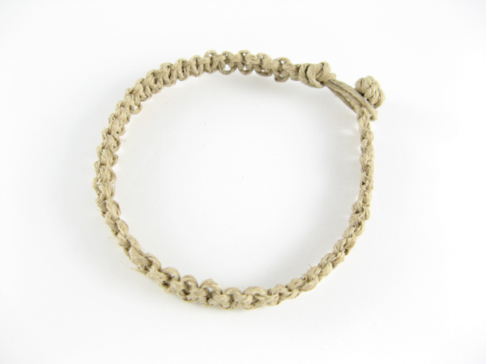
Basic straight knot Instructions:
2 / 6

Begin with overhand knot. Leave half-inch loop.
3 / 6
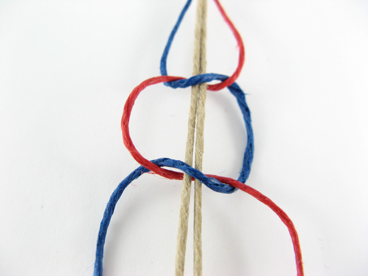
Place blue over middle and under red. Weave red under middle and up through blue loop. For straight design, always with alternating color.
4 / 6
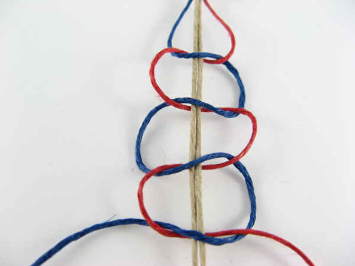
Here is a series or sennit of loose square knots to show you how the pattern will look.
5 / 6
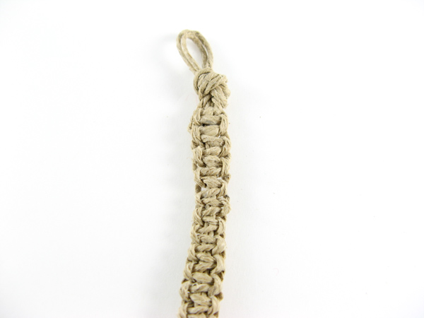
This is a series of hemp square knots. The tighter you make it the longer strings you will need.
6 / 6
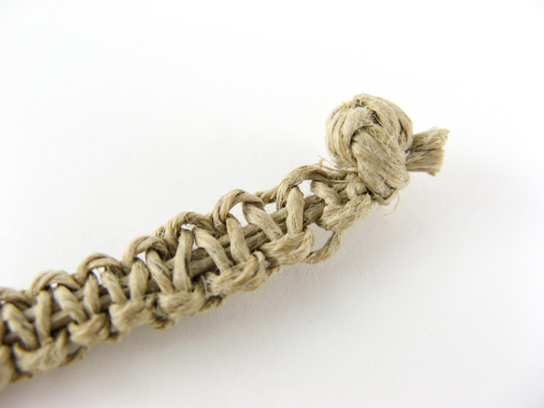
To finish, tie your ending knot. Trim the excess hemp cords.
How to incorporate beads and tie end knot
1 /5

Beads are a wonderful addition to your design.
2 / 5
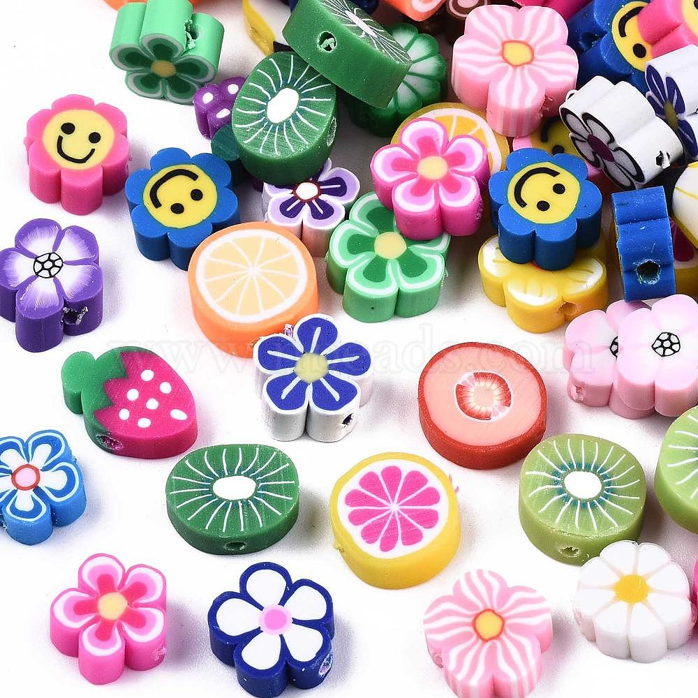
There are many different colors and sizes to choose from.
3 / 5
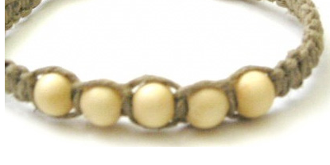
On a bead placed in the middle, the hole needs to be big enough for 2 cords to fit through.
4 / 5
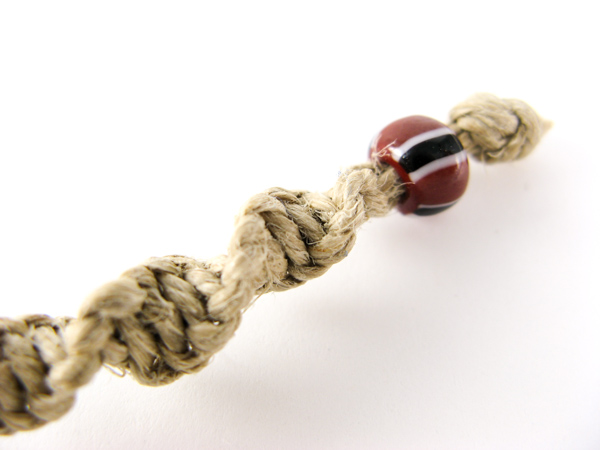
On an end bead, the hole needs to be big enough for all 4 cords to go through. Simply tie another overhand knot at the end.
5 / 5
Alternatively, tie an overhand not at the end instead of a bead. Make it bigger by over same knot. Needs to fit through beginning loop.
What materials to use and how to measure string.
1 / 5
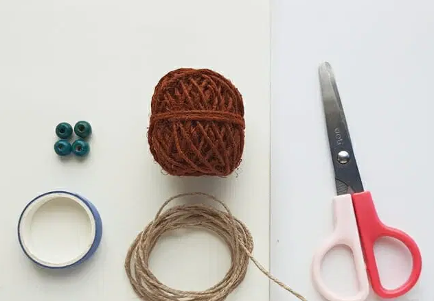
You will need hemp cord, scissors, beads(optional), and something to anchor to, like tape on a hard surface, a key ring or paper clip. A clipboard also works nicely.
2 / 5
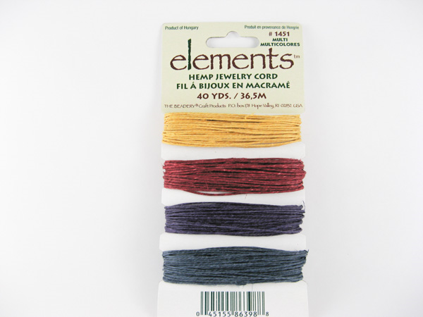
There are lots of different colors to choose from.
3 / 5
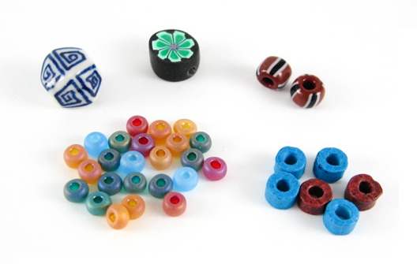
There are lots of different beads to choose from. For the middle, only two cords need to fit through the hole of the bead. for the end, all four need to fit. The starting loop needs to fit over.
4 / 5

There are many different sizes. These tutorials primarily use 1mm. The thicker you go, the longer cord you will need. Get desired lenght(L).for 1mm, cut one that is 2xL + 1 foot, cut one that is 4xL + 2 foot.
5 / 5
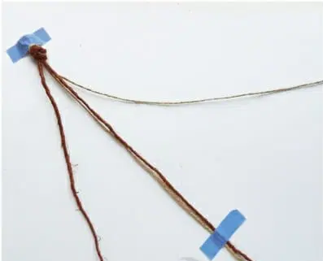
Fold both in half, put two together, tie beginning knot. Anchor the loop and begin.